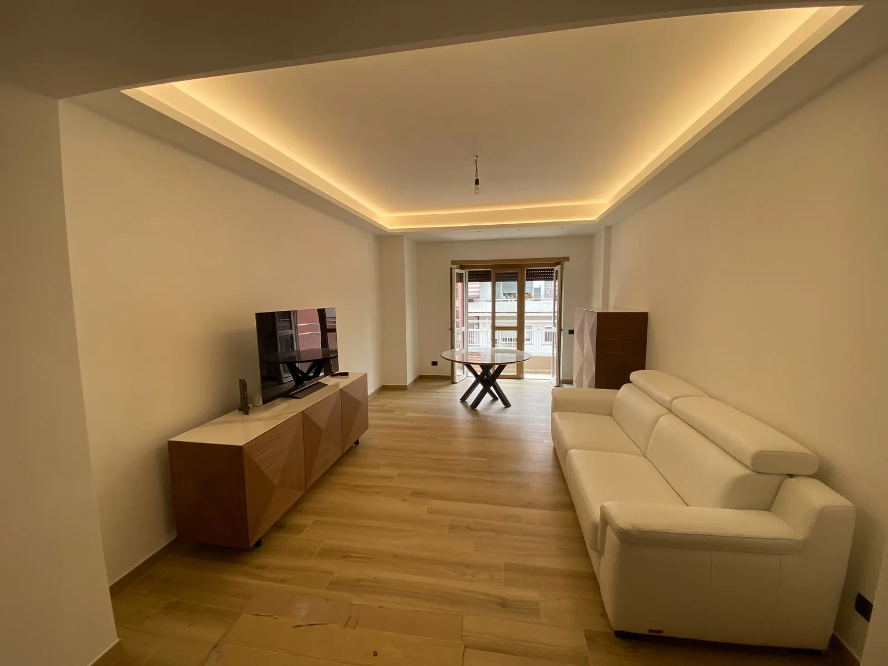

Roma & Provincia · Dal 2013
Il cantiere fatto bene, con la firma Sitom.
Ristrutturazioni, impianti e finiture seguiti da artigiani veri. Seguiamo ogni lavoro con precisione, un unico referente e un preventivo gratuito entro 24 ore.
Richiedi il tuo preventivo →
Risposta diretta da Sitom, senza passaggi inutili.